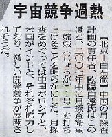

06.6.25の中日新聞に、中国の月探査衛星打ち上げ計画のニュースが報じられていた。

天女散華牌にあるように、嫦娥というのは日本の『竹取物語』（かぐや姫）の原典となった月の女神（天女）のこと。嫦娥は“永遠に美女”という意味で、常は恒と同じ“永久不変”の意がある。そこで嫦娥は[女亘]娥とも表記される。もちろん発音は嫦娥も[女亘]娥も「こうが」である。
しかし[女亘]娥」と表記した場合は恒からの連想で「こうが」と発音しやすいが、嫦娥の場合は常からの連想で つい「じょうが」と発音したくなるのも分からんでもない。“言葉は世につれ”なので、世の中の多くの人が「じょうが」と発音するようになれば、それはそれで世の流れ。
たとえば消耗品とか洗滌とか捏造、いずれも現時点では「しょうこうひん」、「せんでき」、「でつぞう」が正音。しかし慣用音として「しょうもうひん」、「せんじょう」、「ねつぞう」が通用している。そこでワープロソフト（一太郎）も、消耗品や洗滌などは慣用音を入力しても出てくる（「せんじょう」はさすがに「洗浄」が先に出てきた。エライゾ 一太郎！）。
もちろん将来 慣用音が正音となり、「しょうこうひん」や「でつぞう」で消耗品や捏造が出てこなくなっても仕方がない。じっさい「煌々と輝く」ななんて、「きょうきょうとかがやく」では出てこない（「兢々と輝く」ってなんだ....）。
しかしいくらなんでも、現時点で「じょうが」が慣用音とは思えない。じっさい一太郎でも、「じょう」で「嫦」は出てこない（「こう」なら出てくる）。現時点で普通のワープロソフトでも出て来ないような発音を、新聞社が“じょうが”と振り仮名してどうするんだっ。★Ｏ＝(`_` )メガパンチ！
おまけ
「既出」はもちろん「きしゅつ」であるが、かの有名な２chでは面白半分に「がいしゅつ」と表記されている。もちろん現時点では「がいしゅつ」と打っても、外出しか出てこない。しかし「嫦娥（こうが）」と違って日常表現。このまま行くと、10年くらい後には既出が出るかも。(・_・)
|